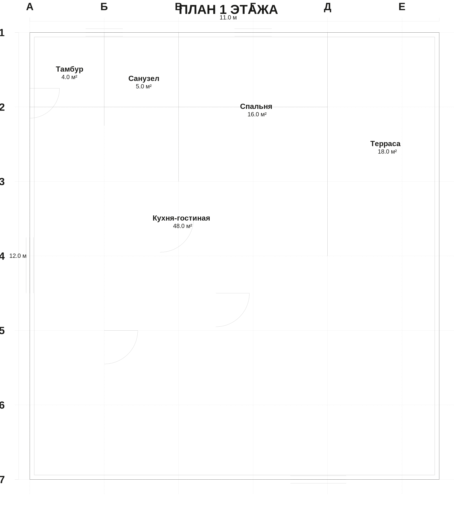
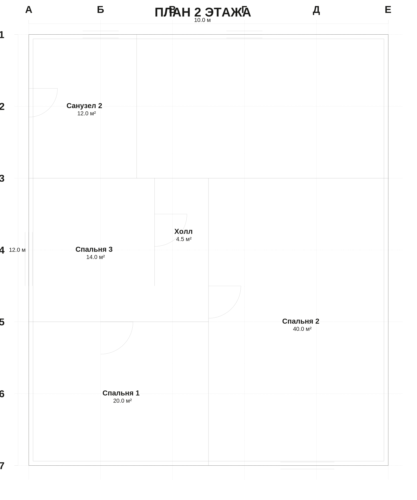

Архитектурный проект · 2026-07-18
Коттедж классика — 120 м²
Рис. 1 — Объединённый план 1 и 2 этажа (М 1:100 по ГОСТ 2.302)
Общая спецификация
Общая площадь
≈ 120 м²
1 этаж: ~62 м² + 2 этаж: ~92 м²
Габариты
10 × 12 м
+ терраса 3 × 6 м
Этажность
2
высота этажа 3.0 м
Спален
4
1 + 3 (2 этаж)
Санузлов
2
1 на этаж
Тип стен
400 / 120 мм
внешн. / внутр. (брус/кирпич)
План 1 этажа

Рис. 2 — План 1 этажа: тамбур, кухня-гостиная, санузел, спальня, терраса
Экспликация помещений 1 этажа
| Помещение | Размер, м | Площадь, м² | Норматив |
|---|---|---|---|
| Тамбур | 2.0 × 2.0 | 4.0 | — |
| Санузел | 2.0 × 2.5 | 5.0 | ≥ 2.5 ✓ |
| Спальня (гостевая) | 4.0 × 4.0 | 16.0 | ≥ 10.0 ✓ |
| Кухня-гостиная | 8.0 × 6.0 | 48.0 | ≥ 16.0 ✓ |
| Терраса (открытая) | 3.0 × 6.0 | 18.0 | не учитывается |
| ИТОГО (без террасы) | — | 73.0 | — |
План 2 этажа

Рис. 3 — План 2 этажа: санузел 2, лестница, холл, 3 спальни
Экспликация помещений 2 этажа
| Помещение | Размер, м | Площадь, м² | Норматив |
|---|---|---|---|
| Санузел 2 | 3.0 × 4.0 | 12.0 | ≥ 2.5 ✓ |
| Лестница | 1.0 × 4.0 | 4.0 | марш 1.0 м ✓ |
| Холл | 1.5 × 3.0 | 4.5 | ≥ 1.1 шир. ✓ |
| Спальня 1 (хозяева) | 5.0 × 4.0 | 20.0 | ≥ 10.0 ✓ |
| Спальня 2 | 5.0 × 8.0 | 40.0 | ≥ 10.0 ✓ |
| Спальня 3 | 3.5 × 4.0 | 14.0 | ≥ 10.0 ✓ |
| ИТОГО | — | 94.5 | — |
Соответствие нормам
✓ СП 55.13330.2011 «Дома жилые одноквартирные» — все спальни ≥ 10 м², кухня-гостиная ≥ 16 м², санузлы ≥ 2.5 м². Автоматическая проверка пройдена.
✓ СП 54.13330.2022 «Здания жилые многоквартирные» — высоты этажей 3.0 м соответствуют норме ≥ 3.0 м, ширина коридоров и лестничного марша в норме.
✓ ГОСТ 21.501-2018 — линии выполнены по ГОСТ 2.303 (внешние стены толстой линией, оси штрихпунктиром 24-5-3-5, размеры выносными, двери с дугами открытия).
Конструктивные решения (TODO для архитектора)
- Фундамент: ленточный или плитный (зависит от грунта — нужно геология)
- Стены: 400 мм внешние — керамический блок Porotherm 380 + 20 мм штукатурка, или брус 200 + утеплитель 150 + облицовка
- Перекрытие: деревянные балки 200×50, шаг 600 мм, или ж/б плита 160 мм
- Кровля: двускатная, металлочерепица или фальцевая, уклон ≥ 30°, вынос карниза 500 мм
- Окна: ПВХ или дерево, двойной стеклопакет (СНиП 23-02 для МО — R₀ ≥ 0.49 м²·°C/Вт)
- Лестница: Г-образная с забежными ступенями, ширина марша 1000 мм, высота ступени 180 мм, ширина проступи 250 мм
- Отопление: газовый котёл + радиаторы, или электроконвекторы (зависит от подключения к газу)
Что нужно сделать дальше
- Фасады — нужны 4 фасада (южный с террасой, северный, восточный, западный) с окнами и кровлей
- Разрез — поперечный разрез покажет высоту этажей, конструкцию перекрытия и кровли
- Генплан — расположение дома на участке, подъезд, отмостка, септик, скважина
- Узлы — деталировка узлов (карниз, цоколь, проёмы, лестница)
- Инженерные сети — электрика, водоснабжение, канализация, отопление (отдельные разделы)
- Смета — расчёт стоимости материалов и работ
⚠️ Это концепт, не рабочая документация. Для получения разрешения на строительство нужен проект от лицензированного архитектора с допуском СРО, привязка к геологии участка, расчёт нагрузок и согласование с местной администрацией.